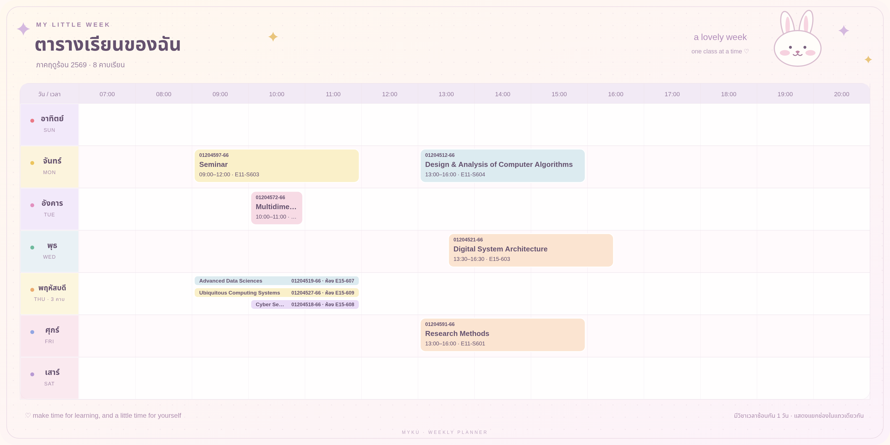

มีแท็บเดิมอยู่ด้วย
ตารางเรียน MyKU เดิมเป็นค่าเริ่มต้น เพิ่มแท็บรายสัปดาห์ไว้ข้างกัน
ดูสัปดาห์ของคุณในโทนพาสเทล พร้อมรหัสวิชาและห้องเรียน
บันทึกเป็นภาพ 16:8 ได้ในคลิกเดียว และยังเก็บตารางเดิมของ MyKU ไว้
แตก ZIP แล้วเลือก Load unpacked ใน Chrome · ยังไม่ได้เผยแพร่ใน Chrome Web Store

ตารางเรียน MyKU เดิมเป็นค่าเริ่มต้น เพิ่มแท็บรายสัปดาห์ไว้ข้างกัน
แยกช่องย่อย พร้อมรหัสวิชาและห้อง คลิกชื่อวิชาหรือชื่อวันเพื่ออ่านรายละเอียดเต็ม
ภาพ 16:8 สีเดียวกับที่เห็นบนเว็บ สร้างในเครื่องของคุณ ไม่ส่งข้อมูลตารางออกไป
ใช้ได้กับ Chrome บนคอมพิวเตอร์ ไม่ต้อง build โปรแกรม
chrome://extensionsวางที่อยู่ในแถบ URL ของ Chrome แล้วเปิด Developer modecurl -fsSL https://PuemMTH.github.io/myku-timetable-extension/install.sh | bashต้องมี curl และ python3 สคริปต์จะดาวน์โหลด Release ล่าสุด ตรวจ SHA-256 และเตรียมโฟลเดอร์ให้ จากนั้นกด Load unpacked ตามขั้นตอนด้านบนหนึ่งครั้ง หากอัปเดตรุ่นเดิมให้กด Reload ส่วนขยายแทน
อ่านหรือดาวน์โหลดสคริปต์ · Windows ใช้ ZIP และขั้นตอนติดตั้งด้านบนได้
Chrome ไม่ให้เว็บหรือสคริปต์ทั่วไปติดตั้งส่วนขยายเองโดยข้ามขั้นตอนของเบราว์เซอร์ หากต้องการติดตั้งจากเว็บโดยตรง ต้องเผยแพร่ผ่าน Chrome Web Store อ่านข้อกำหนดของ Chrome ↗